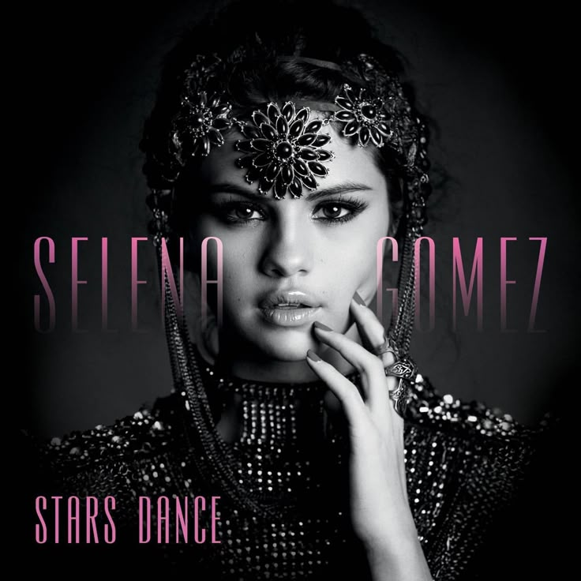

Stars Dance
7.99€
Album Details
Release Date: Stars Dance was released on July 19, 2013 (worldwide) and on July 23, 2013 in the United States.
Main Writers/Producers: The album was developed in collaboration with notable producers and writers such as Dreamlab, Rock Mafia, and Stargate. Selena Gomez also contributed to the songwriting process, marking her creative evolution.
Significance: Stars Dance marked a turning point in Selena’s career. It represented her transition from her teen idol image to a mature pop artist with a bold, dance-pop sound and personal expression.
Singles oficiales (orden de publicación)
- Birthday – Lanzado el 2 de abril de 2013
- Slow Down – Lanzado el 28 de mayo de 2013
- Stars Dance – Vídeo publicado el 12 de julio de 2013
- Like a Champion – Vídeo exclusivo publicado el 2 de diciembre de 2013
Glosario y créditos
- Dreamlab
- Equipo de producción que colaboró en varios temas del álbum.
- Rock Mafia
- Productores y compositores detrás del sonido dance-pop de Stars Dance.
- Stargate
- Dupla de productores noruegos, conocidos por su sello electrónico y R&B.
- Edición exclusiva
- Copia del álbum con pistas bonus y arte inédito.
- Badge “Novedad”
- Etiqueta que señala los lanzamientos más recientes o populares.
Tracklist
Birthday
Excerpt 1: "It's your birthday, let's celebrate tonight."
Excerpt 2: "Feel the rhythm and light up the night."
Slow Down
Excerpt 1: "Slow down, take a breath, feel the beat."
Excerpt 2: "Every moment lingers in a timeless groove."
Stars Dance
Excerpt 1: "Dance under the stars, let the night ignite."
Excerpt 2: "Your moves echo in the galaxy of dreams."
Like a Champion
Excerpt 1: "Stand tall and rise, like a champion."
Excerpt 2: "Every victory lights a fire inside."
Forget Forever
Excerpt 1: "Let go of yesterday, forget forever the pain."
Excerpt 2: "Embrace the future with unbound hope."
Falling Down
Excerpt 1: "Even when you're falling, rise again."
Excerpt 2: "Every stumble is a step towards strength."
B.E.A.T.
Excerpt 1: "Feel the pulse of life in every beat."
Excerpt 2: "Let the rhythm carry you to new heights."
Write Your Name
Excerpt 1: "Write your name in the stars, an endless glow."
Excerpt 2: "A legacy shining in the cosmic flow."
Undercover
Excerpt 1: "Secrets whispered softly under cover of night."
Excerpt 2: "Mystery draped in shadows, hidden from sight."